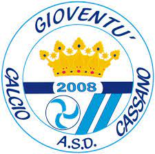
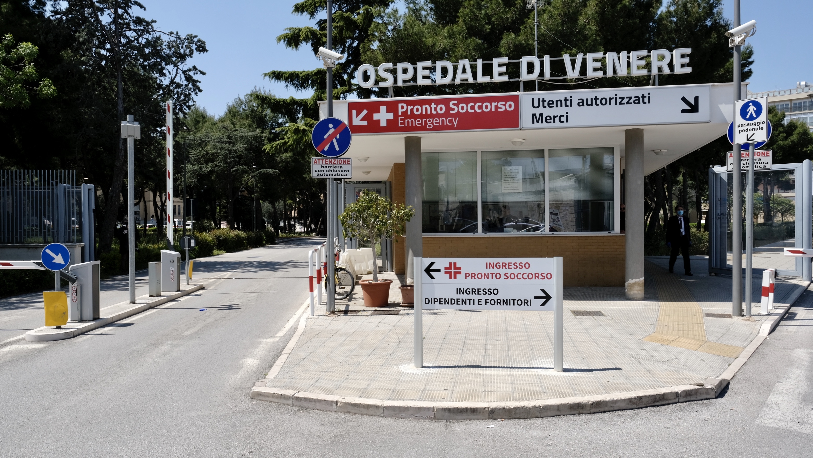

Mi chiamo Giuseppe Pertoso sono nato il 28 Aprile del 2005 all'ospedale Di Venere a Bari.
I miei genitori sono originari di Bari ma appena sono nato si sono trasferiti a Cassano.
La mia famiglia è composta da me,mia madre,mio padre e mia sorella.Ho anche un cane.La razza del mio cane è Maltese.
Fin da quando sono piccolo mi piace giocare a calcio,infatti quando avevo 5 anni mi iscrissi ad una squadra di paese che si chiama Atletico Cassano.
Smisi di giocare in prima media perchè mi ruppi il braccio,poi però ho ripreso in primo superiore andando ad un'altra società chiamata Esperia. Dopo una stagione interrota per il covid vado alla Dimateam a Santeramo,ma il covid interruppe di nuovo tutto. Ora gioco nell'Atletico Acqauviva ad Acquaviva delle fonti.
Dopo lo sport parliamo di scuola,io frequento l'istituto Colamonico con indirizzo informatico,ho scelto questo indirizzo perchè fin da piccolo mi piaceva usare i computer.
 Per il futuro non saprei cosa fare sono ancora indecisp,spero che nei prossimi anni possa prendere una decisione sul da farsi.